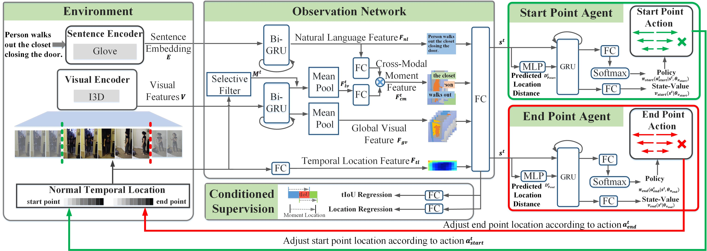
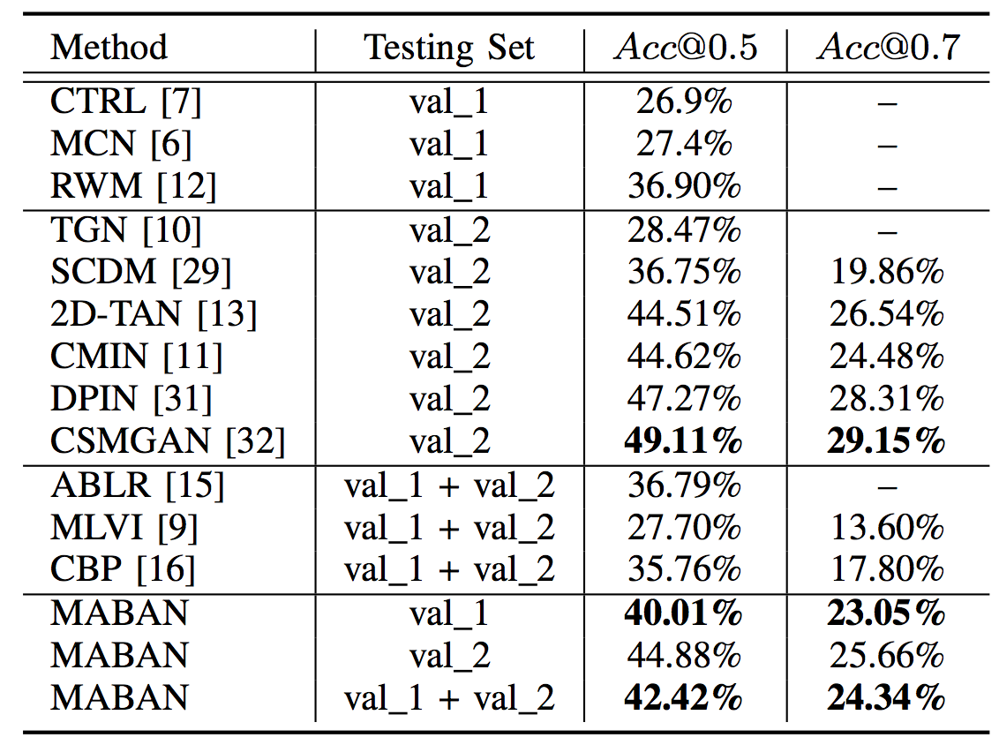
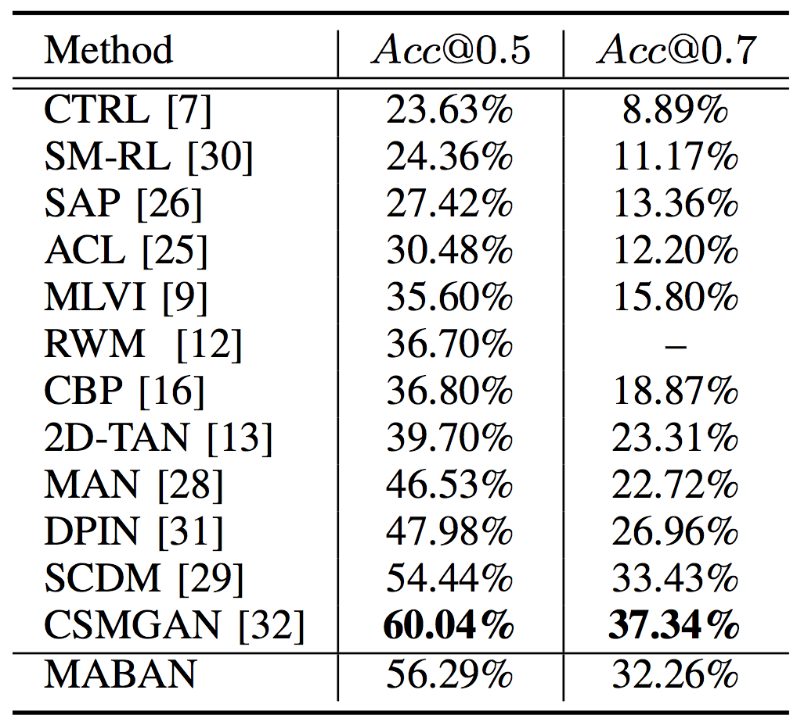
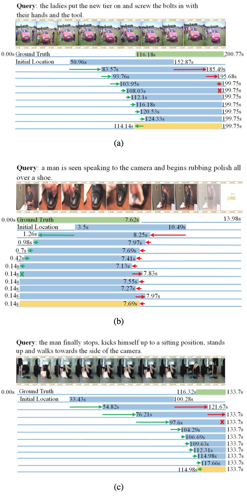
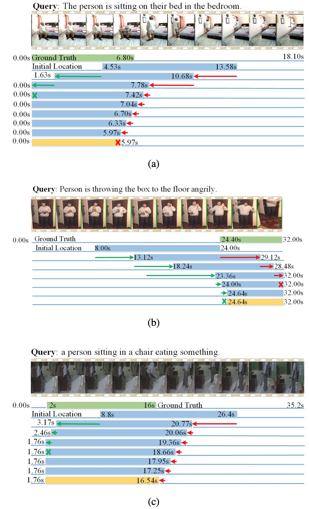

MABAN: Multi-Agent Boundary-Aware Network for Natural Language Moment Retrieval
Xiaoyang Sun, Hanli Wang and Bin He
Overview:
The amount of videos over the Internet and electronic surveillant cameras is growing dramatically; meanwhile paired sentence descriptions are significant clues to choose attentional video contents. The task of natural language moment retrieval (NLMR) has drawn great interests from both academia and industry, which aims to associate specific video moments with the text descriptions figuring complex scenarios and multiple activities. In general, NLMR requires temporal context to be properly comprehended, and the existing studies suffer from two problems: (1) limited moment selection and (2) insufficient comprehension of structural context. To address these issues, a multi-agent boundary-aware network (MABAN) is proposed. To guarantee flexible and goal-oriented moment selection, MABAN utilizes multi-agent reinforcement learning to decompose NLMR into localizing the two temporal boundary points for each moment. Specially, MABAN employs a two- phase cross-modal interaction to exploit the rich contextual semantic information. Moreover, temporal distance regression is considered to deduce the temporal boundaries, with which the agents can enhance the comprehension of structural context. Extensive experiments are carried out on two challenging benchmark datasets of ActivityNet Captions and Charades-STA, which demonstrate the effectiveness of the proposed approach as compared to state-of-the-art methods.
Method:
As shown in Fig. 1, MABAN is designed based on a multi-agent reinforcement-learning framework to iteratively modify the start point and end point of the candidate moments. It consists of observation network, start point agent, end point agent, and conditioned supervision. Firstly, observation network generates the state vector with a two-phase cross-modal integration approach. The proposed approach fuses cross-modal semantic in the global and local phases, which fullyexploits rich context information and lays the foundation of more precise decisions. In addition, conditioned supervision is employed to learn more representative state vectors. Then the start point agent and the end point agent respectively adjust the temporal boundaries in variable directions and scales to move towards the expected moment progressively. In each agent, there is a temporal distance regression branch before the two traditional branches in the actor-critic module. The temporal distance regression is employed to infer the temporal distance between the predicted moment and the ground truth, which helps the corresponding agent to understand its own goal and make more reasonable choices.

Fig. 1. Overview of the proposed MABAN framework.
Results:
The proposed MABAN is evaluated on two challenging benchmark datasets of ActivityNet Captions and Charades-STA, compared with several baseline methods. The model performances are measured using Acc@0.5 and Acc@0.7, which indicate whether the tIoU between the ground truth and the result generated by a model is higher than the threshold values of 0.5 and 0.7. Table 1 reports the comparison of our method with state-of-the-art approaches on the ActivityNet Captions dataset. Here the source of testing set is considered as a variable, containing two individual validation sets and the fusion of them. As shown, MABAN achieves the best performance on the two testing sets except val_2. Table 2 presents the comparison of the proposed MABAN with other state-of-the-art methods on Charades-STA. The proposed MABAN places the second and substantially surpasses other methods except CSMGAN and DPIN. As shown in Fig. 2 and Fig. 3, we visualize how the boundary-aware agents separately adjust their corresponding temporal point location.

Table 1. Comparison with state-of-the-art methods on ActivityNet Captions. The bold result indicates the best performance in the corresponding testing set.

Table 2. Comparison with state-of-the-art methods on Charades-STA.

Fig. 2. Qualitative visualization of the action sequences executed by MABAN on ActivityNet Captions. The green color indicates the ground truth. The blue bar refers to immediate moments, and the yellow bar stands for the final retrieval result. The process of adjustment of temporal boundaries is visualized with the green and red arrows.

Fig. 3. Qualitative visualization of the action sequences executed by MABAN on Charades-STA. The green color indicates the ground truth. The blue bar refers to immediate moments, and the yellow bar stands for the final retrieval result. The process of adjustment of temporal boundaries is visualized with the green and red arrows.
Code:
原站插图：图片暂留白MABAN1.0.zip
Citation:
Please cite the following paper if you find this work useful:
Xiaoyang Sun, Hanli Wang and Bin He, MABAN: Multi-Agent Boundary-Aware Network for Natural Language Moment Retrieval, IEEE Transactions on Image Processing, vol. 30, pp. 5589-5599, 2021.